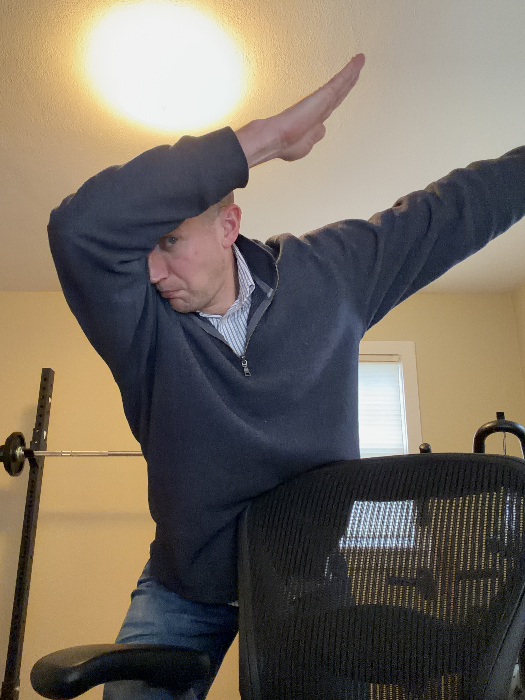

About Us
The Western Extension Committee is an organization of Extension specialists — state, regional, and county — from the 13 western states and U.S. affiliated Pacific Islands, supported by Extension Directors in the western region. WEC also receives support from the Western Extension Risk Management Education Center (Western Center).
The purpose is to share concerns and ideas, with the goal of becoming more effective as Extension specialists. Committees and task forces are organized to work together on projects or issues that are common to several or all states. The Committee sometimes meets and works with other regional and national Extension committees.
We are loosely affiliated with the Western Agricultural Economics Association and work to strengthen the impact of agricultural economics extension work throughout the western region.
Committee Leadership

Past Committee Chairs
2023–2024: Patrick Hatzenbuehler, University of Idaho
2022–2023: Ramiro Lobo, UC Cooperative Extension
2020–2022: Russ Tronstad, University of Arizona
View our complete member directory organized by state
Full Member Directory →Upcoming Meetings
Winter Meeting
Annual winter meeting for committee members. Details and registration information to be announced.
WAEA Annual Conference
Western Extension Committee session at the Western Agricultural Economics Association Annual Conference.
Contact Us
For general inquiries, please contact Committee Chair Tim Delbridge at tim.delbridge@oregonstate.edu